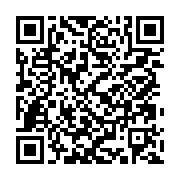

High-security optical session handshake. Scan the provisioned matrix below using an authorized verification device to establish a token-verified session channel. Direct navigation without session authorization is rejected by perimeter policy.
